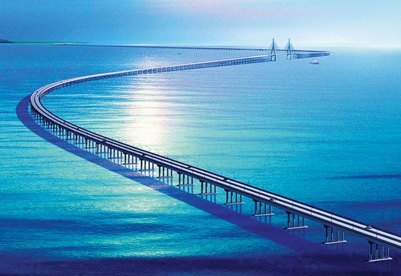

Danyang–Kunshan Grand Bridge |
|
Danyang–Kunshan Grand Bridge

The Danyang–Kunshan Grand Bridge is an engineering marvel and the world's longest bridge. Here are some key facts:
This viaduct bridge crosses a variety of terrains, including rice paddies, canals, rivers, and lakes. It significantly reduces travel time between Shanghai and Nanjing, playing a crucial role in China's high-speed rail network. |
|
|
© 2023 World's Biggest Bridges. All rights reserved. |
|